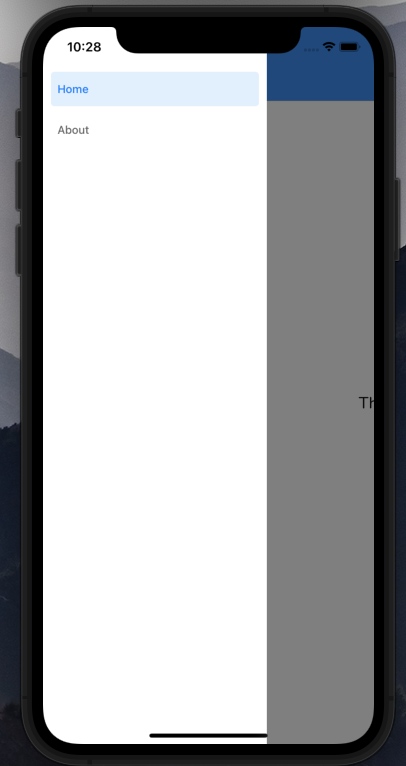
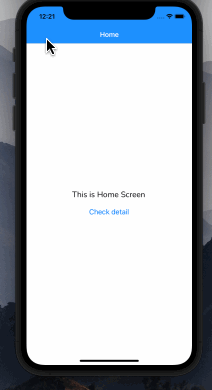
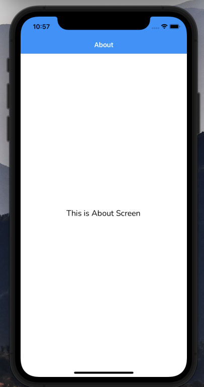
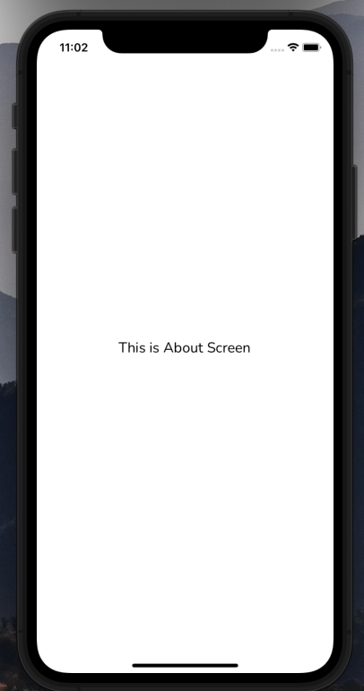
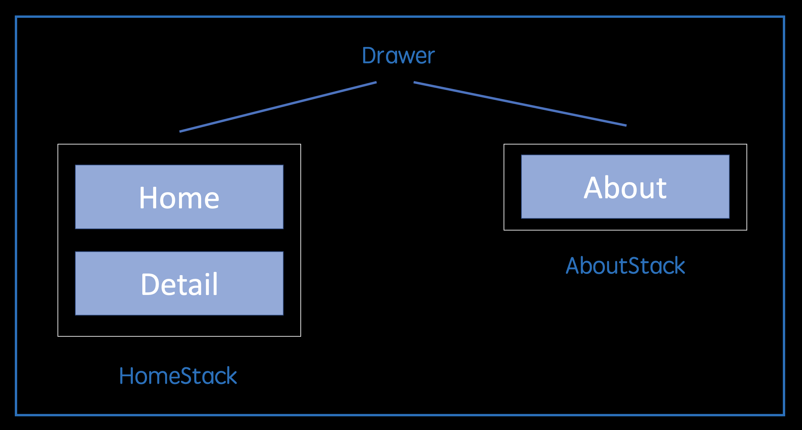
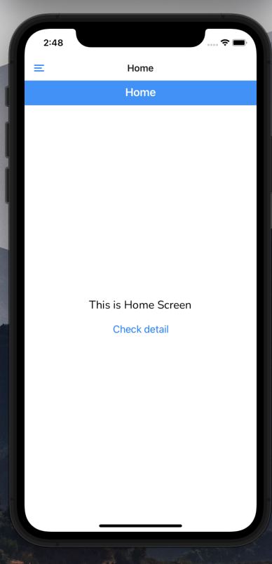
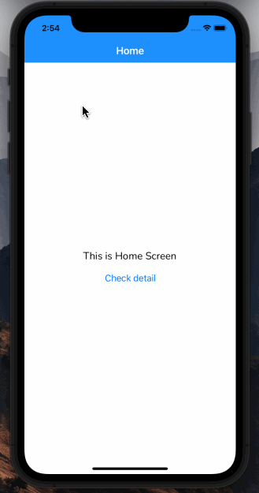
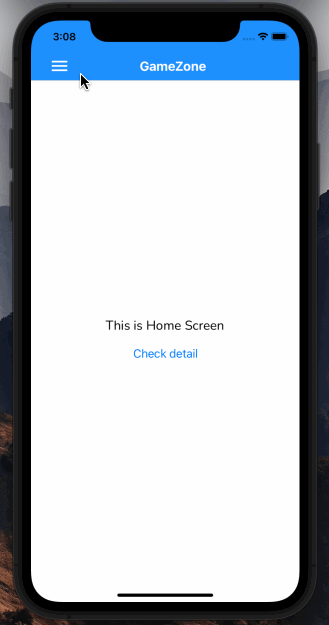

再來一個經典的導覽列。
自我檢測
- 我知道怎麼透過客製化元件來當作 NabBar
- 我知道怎麼把 Drawer 跟 Stack 結合起來用
- 我知道怎麼透過
options 來傳遞 props 給自定義元件
關於背後的設計理念
在不考慮太多的情況下，假設你想做的效果是這樣：
有一個側邊導覽列，可以進入 Home 跟 About
（順道一提，這個可以拉出來的東西就叫做「Drawer Navigation」，也是我們等一下要實作的東西。）

接著，Home 裡面又可以進入到其他頁面，像這樣：

而 About 的話就只是一個普通的頁面：

你可以先想想看，你會怎麼來實作這樣的東西？
會特別提這個的原因是，其實 Home 跟 About 這兩個頁面其實都是 Stack Navigation。
你可能會想說幹嘛不直接拿 About 來用就好，還要包成一個 Stack？回答這問題之前，不如直接來試試看，看結果會怎麼樣：

看到了吧，上面那條 NavBar 消失了，這個就是為什麼都還要包成 Stack 的原因：
就算只有一個頁面，我也希望他有上面的 NavBar
所以你才會看到很多人設計路由時都是這樣子：

總之希望這邊可以幫你解惑一點，因為等一下的範例也會用這種方式來實作。
需要裝的套件
我假設你目前已經有這些套件，沒有的話請順便裝起來：
- @react-navigation/native (npm) 核心
- @react-navigation/native-stack (npm) 建立 Stack 需要
- react-native-screens (expo) 給 Expo 用的
- react-native-safe-area-context (expo) 給 Expo 用的
接著是使用 Drawer Navigation 會用到的套件：
- @react-navigation/drawer (npm) 核心
- react-native-gesture-handler (expo) 給 Expo 用的
- react-native-reanimated (expo) 給 Expo 用的
動工吧！
這邊會延續 React Navigation－Navigation Stack 的概念來繼續往下做。目標是一開始展示的那種效果，所以就直接開始吧！
首先我們會有三個頁面，分別為：
最開始的時候有說過，為了讓每個頁面都有 NavBar，所以會拆成兩個 Stack，分別是：
如果你忘記的話可以拉回去上面看一下藍圖，總之 Drawer Navigation 的任務就是負責顯示這兩個不同的 Stack！
所以第一步就是先建立好 Stack，這邊的東西你應該要看得懂，所以就不特別解釋了
1
2
3
4
5
6
7
8
9
10
11
12
13
14
15
16
17
18
19
20
21
22
23
24
25
26
|
import { createNativeStackNavigator } from "@react-navigation/native-stack";
import HomeScreen from "../screens/Home";
import DetailScreen from "../screens/Detail";
const Stack = createNativeStackNavigator();
const HomeStack: React.FC = () => {
return (
<Stack.Navigator screenOptions={{
headerBackTitle: 'Back',
headerTintColor: '#fff',
headerStyle: {
backgroundColor: 'dodgerblue'
},
headerTitleStyle: {
fontSize: 20
}
}}>
<Stack.Screen name="Home" component={HomeScreen} />
<Stack.Screen name="Detail" component={DetailScreen} />
</Stack.Navigator>
)
}
export default HomeStack;
|
1
2
3
4
5
6
7
8
9
10
11
12
13
14
15
16
17
18
19
20
|
import { createNativeStackNavigator } from "@react-navigation/native-stack";
import AboutScreen from "../screens/About";
const Stack = createNativeStackNavigator();
const AboutStack: React.FC = () => {
return (
<Stack.Navigator screenOptions={{
headerTintColor: 'white',
headerStyle: {
backgroundColor: 'dodgerblue'
}
}}>
<Stack.Screen name="About" component={AboutScreen} />
</Stack.Navigator>
)
}
export default AboutStack;
|
到這邊 Stack 的部分就完成了，接下來是 Drawer 的部分。
但說實話，等一下要做的東西基本上就跟在做 Stack 時有 87 分像，你直接看 code 大概就能抓到那個 pattern 了：
1
2
3
4
5
6
7
8
9
10
11
12
13
14
15
16
17
18
19
20
21
22
| import { createDrawerNavigator } from "@react-navigation/drawer";
const Drawer = createDrawerNavigator();
import HomeStack from "./HomeStack";
import AboutStack from "./AboutStack";
const DrawerNavigator: React.FC = () => {
return (
<Drawer.Navigator screenOptions={{
headerShown: false
}}>
// 如果沒有指定 options，預設會用顯示 name 的文字 ，所以才要重新指定
<Drawer.Screen name="HomeStack" component={HomeStack} options={{ title: 'Home' }} />
<Drawer.Screen name="AboutStack" component={AboutStack} options={{ title: 'About' }} />
</Drawer.Navigator>
)
}
export default DrawerNavigator;
|
這邊解釋一下 screenOptions 的部分。
如果沒有設定 headerShown: false，預設會顯示另一個 NavBar 像這樣：

至於 title 的部分就如同註解裡所說的，這部分就不再貼圖片了。
總之，做到這邊以後基本的 Drawer Navigation 就完成了。
還沒完，這時候你可能會碰到的 bug
把剛剛寫的 code 拿去執行後，你有可能會得到這個錯誤訊息：
Error: Reanimated 2 failed to create a worklet, maybe you forgot to add Reanimated’s babel plugin?
這邊爬了一段時間才找到解法，是參考 這篇 來解的。
簡單來說是跟 babel 有關的問題，詳細參考 官方文件 的說明，但總之呢，請先安裝這個東西：
1
| expo install react-native-reanimated
|
接著去設定 babel.config.js：
1
2
3
4
5
6
7
8
| module.exports = function(api) {
api.cache(true);
return {
presets: ['babel-preset-expo'],
plugins: ['react-native-reanimated/plugin'],
};
};
|
接著用清除快取的方式來重啟 Expo：
沒意外的話就能解決囉！
先複習一下，在剛剛解完 bug 以後，你應該就會有這樣的效果：

看起來似乎還挺順利的，但必須老實説的是，如果沒有特別介紹的話一般人根本不知道有這個功能吧？畢竟一點提示都沒有RRRRR！
所以接下來我們要做的就是把他改成這樣子：

這邊我只會講個大概，不會講太細，因為用文字敘述的話有點麻煩。如果真的想要 Step-By-Step 的話，可以參考這個影片。
簡單來說，我們可以客製化一個元件，再把他透過 options 的方式放到 Screen 中（就像透過 title 來改變顯示文字一樣）。
附註：如果你後來發現有寬高無法填滿的問題的話，建議改用 header 來設定
所以我們要客制的元件內容如下：
1
2
3
4
5
6
7
8
9
10
11
12
13
14
15
16
17
18
19
20
21
22
23
24
25
26
27
28
29
30
31
32
33
34
35
36
37
38
39
40
41
42
43
44
45
46
47
48
| import { View, Text, StyleSheet, TouchableOpacity, StatusBar } from "react-native";
import { MaterialIcons } from '@expo/vector-icons';
interface Props {
navigation: any,
title: string
}
const Header: React.FC<Props> = ({ navigation, title }) => {
const openMenu = () => {
navigation.openDrawer();
}
return (
<View style={styles.container}>
<TouchableOpacity style={styles.icon} onPress={openMenu} >
{/* 漢堡 */}
<MaterialIcons name="menu" size={32} color='#fff' />
</TouchableOpacity>
<View>
{/* title */}
<Text style={styles.text}>{title}</Text>
</View>
</View>
)
}
const styles = StyleSheet.create({
container: {
width: '100%',
height: '100%',
flexDirection: 'row',
justifyContent: 'center',
alignItems: 'center',
},
text: {
color: '#fff',
fontSize: 20,
fontWeight: 'bold'
},
icon: {
position: 'absolute',
left: 16
}
})
export default Header;
|
這邊我想特別講地方的只有一個，就是 container 的設定。
之所以會把寬高設為 100%，是因為我們這個元件「會放在 Navbar 裡面」，所以會有「父子階層」的意思，所以這時候的 % 就會以 NavBar 來做計算。
不用想得太複雜，我們要的就是讓他填滿原本 NavBar 的寬跟高而已。
接著來看怎麼把他放到 options 中，不過要注意一件事情，我們要放的地方只會有兩個，一個是 Home，一個是 About。
為什麼 Detail 不用放？因為我們希望它保留原本的樣子，讓他保留那個 <back 的按鈕，所以它的部分不用做額外調整。
1
2
3
4
5
6
7
8
9
10
11
12
13
14
15
16
17
18
19
20
21
22
23
24
25
26
| import { createNativeStackNavigator } from "@react-navigation/native-stack";
import AboutScreen from "../screens/About";
import Header from "../share/Header";
const Stack = createNativeStackNavigator();
const AboutStack: React.FC = () => {
return (
<Stack.Navigator screenOptions={{
headerTintColor: 'white',
headerStyle: {
backgroundColor: 'dodgerblue'
}
}}>
{/* 放到 options 中 */}
<Stack.Screen name="About" component={AboutScreen} options={({ navigation }) => {
return {
headerTitle: () => <Header navigation={navigation} title="About GameZone" />
}
}}/>
</Stack.Navigator>
)
}
export default AboutStack;
|
這邊可以注意到兩個地方：
options 傳的是一個 function- 在
headerTitle 中傳的也是一個 function
先解釋第一個，這樣寫是因為我們想把 navigation 當作 props 傳入 <Header />，所以才得這樣寫。
至於第二點是因為我們想要用客製元件來當作內容，所以一樣得透過 function 的方式來回傳 JSX。
以上，做到這邊後你就有一個比較優的 Drawer Navigation 囉！